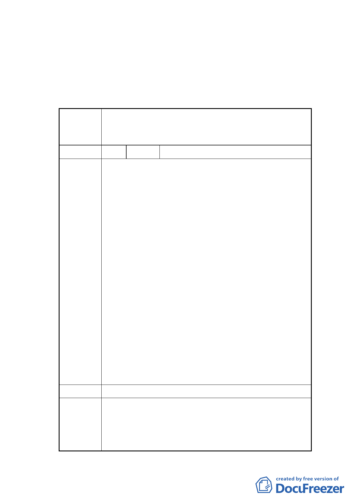

有權人權益，如自公告實施日起五年內仍無法取得建造執
照開發，則回復為原都市計畫。
二、公民或團體所提意見審決如後附綜理表。
臺北市都市計畫委員會公民或團體所提意見綜理表
變更臺北市士林區三玉段四小段 491 地號等 4 筆第三種
案 名 住宅區為綠地用地暨 491-2 地號等 4 筆道路用地為第三種
住宅區細部計畫案
編號
陳情理由
1 陳情人 劉阿秀等 15 人
陳情反對理由：
1.將計畫道路變更，變更前後造成該道路地主暴利且整體
基地整併後價值暴增，減損當地居民利益，回饋措施竟
然相當薄弱，僅用相同面積以地易地方便建商更易規劃
豪宅，圖利建商之實非常明確。故回饋面積及項目應該
更大更多，絕不能僅僅相同面積來換地圖利，否則不應
變更。
2.規劃綠地緊鄰 290 巷七弄 11 號 11 一 1 號設備較差之
五層樓舊公寓，常造成老鼠蚊蟲孳生影響住戶甚鉅。故
反對綠地緊鄰該住戶，應沿道路（士東路二巷延伸中山
北路 290 巷 7 弄）設置較大綠地才有實益。
3.設置綠地緊鄰造成本楝住戶汽、機車出入形成死角，行
人奔跑行走相當危險，造成本棟住戶出入之困擾。
4.290 巷七弄之五層樓舊公寓前面臨該巷弄之建地變更
為綠地，不但造成原本已較小的建地切割（和 505 地
號）且使該公寓惟一臨道路面寬將來幾乎消失，這種變
更圖利卻又與鄰為禍的行為，實在叫當地居民無法接
受。
基於上述陳情理由，請委員及有關單位能撤銷該變更條
件，並真正考量當地人民的心聲及需求，才免於本棟住
戶的持續反對。
建議辦法
1.本計畫為配合都市更新事業辦理變更都市計畫，非屬一
市府回應 般公共設施用地變更為可建築土地案件，且已等面積調
說明
整劃設公共設施用地，故無涉回饋事宜。
另本計畫係考量更新計畫範圍內 6 公尺寬之計畫道路
- 11 -